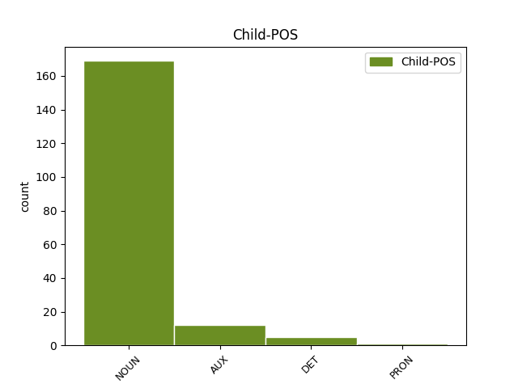

Distribution of features within this leaf

Agreement Rules sorted by frequency.
- When the dependent token is the modifer(mod) of the head token, and the head token is PROPN and the dependent token is NOUN.
1 Մեծ _ _ _ _ 0 _ _ _
2 Սևանի _ _ _ _ 0 _ _ _
3 ջրի _ _ _ _ 0 _ _ _
4 հայելու _ _ _ _ 0 _ _ _
5 մակերեսը _ _ _ _ 0 _ _ _
6 2017 _ _ _ _ 0 _ _ _
7 թվականի _ _ _ _ 0 _ _ _
8 հունվարի _ _ _ _ 0 _ _ _
9 վերջի _ _ _ _ 0 _ _ _
10 դրությամբ _ _ _ _ 0 _ _ _
11 կազմել _ _ _ _ 0 _ _ _
12 է _ _ _ _ 0 _ _ _
13 939,65 _ _ _ _ 0 _ _ _
14 ք/կմ _ _ _ _ 0 _ _ _
15 , _ _ _ _ 0 _ _ _
16 իսկ _ _ _ _ 0 _ _ _
17 Փոքր փոքր NOUN _ Animacy=Nhum|Case=Nom|Definite=Ind|Number=Sing 18 mod _ LTranslit=p’ok’r|Translit=P’ok’r
18 Սևանինը Սևանի PROPN _ Animacy=Nhum|Case=Nom|Definite=Def|NameType=Geo|Number=Sing|Number[psor]=Sing|Poss=Yes 0 _ _ _
19 ` _ _ _ _ 0 _ _ _
20 338.39 _ _ _ _ 0 _ _ _
21 : _ _ _ _ 0 _ _ _
1 Հայոց _ _ _ _ 0 _ _ _
2 ցեղասպանության _ _ _ _ 0 _ _ _
3 կազմակերպիչներից _ _ _ _ 0 _ _ _
4 Ջեմալ Ջեմալ PROPN _ Animacy=Hum|Case=Nom|Definite=Ind|NameType=Sur|Number=Sing 0 _ _ _
5 Փաշայի փաշա NOUN _ Animacy=Hum|Case=Dat|Definite=Ind|Number=Sing 4 flat _ LTranslit=p’aša|Translit=P’ašayi
6 թոռը _ _ _ _ 0 _ _ _
7 ՝ _ _ _ _ 0 _ _ _
8 գրող _ _ _ _ 0 _ _ _
9 , _ _ _ _ 0 _ _ _
10 հրապարակախոս _ _ _ _ 0 _ _ _
11 Հասան _ _ _ _ 0 _ _ _
12 Ջեմալին _ _ _ _ 0 _ _ _
13 « _ _ _ _ 0 _ _ _
14 հանցախմբի _ _ _ _ 0 _ _ _
15 քարոզչություն _ _ _ _ 0 _ _ _
16 » _ _ _ _ 0 _ _ _
17 իրականացնելու _ _ _ _ 0 _ _ _
18 հիմնավորմամբ _ _ _ _ 0 _ _ _
19 սպառնում _ _ _ _ 0 _ _ _
20 է _ _ _ _ 0 _ _ _
21 մինչև _ _ _ _ 0 _ _ _
22 13 _ _ _ _ 0 _ _ _
23 տարվա _ _ _ _ 0 _ _ _
24 ազատազրկում _ _ _ _ 0 _ _ _
25 , _ _ _ _ 0 _ _ _
26 հաղորդում _ _ _ _ 0 _ _ _
27 է _ _ _ _ 0 _ _ _
28 թուրքական _ _ _ _ 0 _ _ _
29 Diken _ _ _ _ 0 _ _ _
30 լրատվամիջոցը _ _ _ _ 0 _ _ _
31 : _ _ _ _ 0 _ _ _
1 ՆԱԻՐԱ Նաիրա PROPN _ Animacy=Hum|Case=Nom|Definite=Ind|NameType=Giv|Number=Sing 0 _ _ _
2 ՀԱՅՐՈՒՄՅԱՆ _ _ _ _ 0 _ _ _
3 , _ _ _ _ 0 _ _ _
4 Մեկնաբան մեկնաբան NOUN _ Animacy=Hum|Case=Nom|Definite=Ind|Number=Sing 1 appos _ LTranslit=meknaban|Translit=Meknaban
1 Արմեն Արմեն PROPN _ Animacy=Hum|Case=Nom|Definite=Ind|NameType=Giv|Number=Sing 0 _ _ _
2 Աշոտյանը _ _ _ _ 0 _ _ _
3 , _ _ _ _ 0 _ _ _
4 որը _ _ _ _ 0 _ _ _
5 , _ _ _ _ 0 _ _ _
6 ըստ _ _ _ _ 0 _ _ _
7 մամուլի _ _ _ _ 0 _ _ _
8 , _ _ _ _ 0 _ _ _
9 կարող _ _ _ _ 0 _ _ _
10 է եմ AUX _ Aspect=Imp|Mood=Ind|Number=Sing|Person=3|Polarity=Pos|Tense=Pres|VerbForm=Fin 1 mod@relcl _ LTranslit=em|Translit=ē
11 խորհրդարանի _ _ _ _ 0 _ _ _
12 նախագահ _ _ _ _ 0 _ _ _
13 դառնալ _ _ _ _ 0 _ _ _
14 , _ _ _ _ 0 _ _ _
15 մեկնաբանելով _ _ _ _ 0 _ _ _
16 ՀՀԿ-ի _ _ _ _ 0 _ _ _
17 « _ _ _ _ 0 _ _ _
18 անվտանգություն _ _ _ _ 0 _ _ _
19 և _ _ _ _ 0 _ _ _
20 առաջընթաց _ _ _ _ 0 _ _ _
21 » _ _ _ _ 0 _ _ _
22 կարգախոսը _ _ _ _ 0 _ _ _
23 , _ _ _ _ 0 _ _ _
24 ասել _ _ _ _ 0 _ _ _
25 է _ _ _ _ 0 _ _ _
26 , _ _ _ _ 0 _ _ _
27 որ _ _ _ _ 0 _ _ _
28 « _ _ _ _ 0 _ _ _
29 առաջընթացը _ _ _ _ 0 _ _ _
30 » _ _ _ _ 0 _ _ _
31 ապահովելու _ _ _ _ 0 _ _ _
32 է _ _ _ _ 0 _ _ _
33 Կարեն _ _ _ _ 0 _ _ _
34 Կարապետյանի _ _ _ _ 0 _ _ _
35 կառավարությունը _ _ _ _ 0 _ _ _
36 , _ _ _ _ 0 _ _ _
37 իսկ _ _ _ _ 0 _ _ _
38 « _ _ _ _ 0 _ _ _
39 անվտանգության _ _ _ _ 0 _ _ _
40 » _ _ _ _ 0 _ _ _
41 մարմնավորումը _ _ _ _ 0 _ _ _
42 Սերժ _ _ _ _ 0 _ _ _
43 Սարգսյանն _ _ _ _ 0 _ _ _
44 է _ _ _ _ 0 _ _ _
45 : _ _ _ _ 0 _ _ _
1 Ինչպես _ _ _ _ 0 _ _ _
2 տեղեկացնում _ _ _ _ 0 _ _ _
3 է _ _ _ _ 0 _ _ _
4 « _ _ _ _ 0 _ _ _
5 Արմենպրես Արմենպրես PROPN _ Abbr=Yes|Animacy=Nhum|Case=Nom|Definite=Ind|NameType=Com|Number=Sing 0 _ _ _
6 » _ _ _ _ 0 _ _ _
7 - _ _ _ _ 0 _ _ _
8 ը ը NOUN _ Animacy=Nhum|Case=Nom|Definite=Def|Number=Sing 5 unk _ LTranslit=ë|SpaceAfter=No|Translit=ë
9 ` _ _ _ _ 0 _ _ _
10 վկայակոչելով _ _ _ _ 0 _ _ _
11 ՀՀ _ _ _ _ 0 _ _ _
12 ազգային _ _ _ _ 0 _ _ _
13 վիճակագրական _ _ _ _ 0 _ _ _
14 ծառայության _ _ _ _ 0 _ _ _
15 տվյալները _ _ _ _ 0 _ _ _
16 , _ _ _ _ 0 _ _ _
17 նախորդ _ _ _ _ 0 _ _ _
18 ամսվա _ _ _ _ 0 _ _ _
19 համեմատ _ _ _ _ 0 _ _ _
20 այն _ _ _ _ 0 _ _ _
21 նվազել _ _ _ _ 0 _ _ _
22 է _ _ _ _ 0 _ _ _
23 1 _ _ _ _ 0 _ _ _
24 սմ-ով _ _ _ _ 0 _ _ _
25 , _ _ _ _ 0 _ _ _
26 իսկ _ _ _ _ 0 _ _ _
27 նախորդ _ _ _ _ 0 _ _ _
28 տարվա _ _ _ _ 0 _ _ _
29 նույն _ _ _ _ 0 _ _ _
30 օրվա _ _ _ _ 0 _ _ _
31 համեմատ _ _ _ _ 0 _ _ _
32 այն _ _ _ _ 0 _ _ _
33 բարձրացել _ _ _ _ 0 _ _ _
34 է _ _ _ _ 0 _ _ _
35 23 _ _ _ _ 0 _ _ _
36 սմ-ով _ _ _ _ 0 _ _ _
37 : _ _ _ _ 0 _ _ _
1 2016 _ _ _ _ 0 _ _ _
2 թվականի _ _ _ _ 0 _ _ _
3 հունվարին _ _ _ _ 0 _ _ _
4 Մեծ _ _ _ _ 0 _ _ _
5 Սևանի _ _ _ _ 0 _ _ _
6 ափամերձ _ _ _ _ 0 _ _ _
7 գոտու _ _ _ _ 0 _ _ _
8 ջրի _ _ _ _ 0 _ _ _
9 միջին _ _ _ _ 0 _ _ _
10 ջերմաստիճանը _ _ _ _ 0 _ _ _
11 կազմել _ _ _ _ 0 _ _ _
12 էր _ _ _ _ 0 _ _ _
13 2,7 _ _ _ _ 0 _ _ _
14 աստիճան _ _ _ _ 0 _ _ _
15 , _ _ _ _ 0 _ _ _
16 իսկ _ _ _ _ 0 _ _ _
17 Փոքր _ _ _ _ 0 _ _ _
18 Սևանինը Սևանի PROPN _ Animacy=Nhum|Case=Nom|Definite=Def|NameType=Geo|Number=Sing|Number[psor]=Sing|Poss=Yes 0 _ _ _
19 ` _ _ _ _ 0 _ _ _
20 3 _ _ _ _ 0 _ _ _
21 աստիճան աստիճան NOUN _ Animacy=Nhum|Case=Nom|Definite=Ind|Number=Sing 18 orphan _ LTranslit=astič̣an|SpaceAfter=No|Translit=astič̣an
22 : _ _ _ _ 0 _ _ _
1 Կկարողանա _ _ _ _ 0 _ _ _
2 ՞ _ _ _ _ 0 _ _ _
3 2018-ի 2018 NOUN _ Animacy=Nhum|Case=Dat|Definite=Ind|Number=Sing|NumForm=Digit 4 mod@poss _ LTranslit=2018|Translit=2018-i
4 Խորվաթիան Խորվաթիա PROPN _ Animacy=Nhum|Case=Nom|Definite=Def|NameType=Geo|Number=Sing 0 _ _ _
5 ռևանշ _ _ _ _ 0 _ _ _
6 վերցնել _ _ _ _ 0 _ _ _
7 ֆրանսիացիներից _ _ _ _ 0 _ _ _
8 : _ _ _ _ 0 _ _ _
1 Նշված _ _ _ _ 0 _ _ _
2 ներկայացման _ _ _ _ 0 _ _ _
3 մեջ _ _ _ _ 0 _ _ _
4 տարբեր _ _ _ _ 0 _ _ _
5 կարողություններ _ _ _ _ 0 _ _ _
6 ունեցող _ _ _ _ 0 _ _ _
7 և _ _ _ _ 0 _ _ _
8 տարբեր _ _ _ _ 0 _ _ _
9 տարիքի _ _ _ _ 0 _ _ _
10 պարողներ _ _ _ _ 0 _ _ _
11 բեմում _ _ _ _ 0 _ _ _
12 միասին _ _ _ _ 0 _ _ _
13 ցուցադրեցին _ _ _ _ 0 _ _ _
14 երկու _ _ _ _ 0 _ _ _
15 մասից _ _ _ _ 0 _ _ _
16 բաղկացած _ _ _ _ 0 _ _ _
17 ներկայացում _ _ _ _ 0 _ _ _
18 . _ _ _ _ 0 _ _ _
19 առաջինը _ _ _ _ 0 _ _ _
20 արդի _ _ _ _ 0 _ _ _
21 հասարակության _ _ _ _ 0 _ _ _
22 մեջ _ _ _ _ 0 _ _ _
23 սոցիալական _ _ _ _ 0 _ _ _
24 ներառման _ _ _ _ 0 _ _ _
25 խնդրի _ _ _ _ 0 _ _ _
26 շուրջ _ _ _ _ 0 _ _ _
27 էր _ _ _ _ 0 _ _ _
28 , _ _ _ _ 0 _ _ _
29 երկրորդը _ _ _ _ 0 _ _ _
30 ՝ _ _ _ _ 0 _ _ _
31 « _ _ _ _ 0 _ _ _
32 Ալիսան Ալիսա PROPN _ Animacy=Hum|Case=Nom|Definite=Def|NameType=Giv|Number=Sing 0 _ _ _
33 հրաշքների _ _ _ _ 0 _ _ _
34 աշխարհում աշխարհ NOUN _ Animacy=Nhum|Case=Loc|Definite=Ind|Number=Sing 32 mod@npmod _ LTranslit=ašxarh|SpaceAfter=No|Translit=ašxarhowm
35 » _ _ _ _ 0 _ _ _
36 հրաշալի _ _ _ _ 0 _ _ _
37 հեքիաթի _ _ _ _ 0 _ _ _
38 ադապտացիան _ _ _ _ 0 _ _ _
39 : _ _ _ _ 0 _ _ _
1 Հայոց _ _ _ _ 0 _ _ _
2 ցեղասպանության _ _ _ _ 0 _ _ _
3 կազմակերպիչներից _ _ _ _ 0 _ _ _
4 Ջեմալ _ _ _ _ 0 _ _ _
5 Փաշայի _ _ _ _ 0 _ _ _
6 թոռը թոռ NOUN _ Animacy=Hum|Case=Nom|Definite=Def|Number=Sing 11 dislocated _ LTranslit=t’oṙ|SpaceAfter=No|Translit=t’oṙë
7 ՝ _ _ _ _ 0 _ _ _
8 գրող _ _ _ _ 0 _ _ _
9 , _ _ _ _ 0 _ _ _
10 հրապարակախոս _ _ _ _ 0 _ _ _
11 Հասան Հասան PROPN _ Animacy=Hum|Case=Nom|Definite=Ind|NameType=Giv|Number=Sing 0 _ _ _
12 Ջեմալին _ _ _ _ 0 _ _ _
13 « _ _ _ _ 0 _ _ _
14 հանցախմբի _ _ _ _ 0 _ _ _
15 քարոզչություն _ _ _ _ 0 _ _ _
16 » _ _ _ _ 0 _ _ _
17 իրականացնելու _ _ _ _ 0 _ _ _
18 հիմնավորմամբ _ _ _ _ 0 _ _ _
19 սպառնում _ _ _ _ 0 _ _ _
20 է _ _ _ _ 0 _ _ _
21 մինչև _ _ _ _ 0 _ _ _
22 13 _ _ _ _ 0 _ _ _
23 տարվա _ _ _ _ 0 _ _ _
24 ազատազրկում _ _ _ _ 0 _ _ _
25 , _ _ _ _ 0 _ _ _
26 հաղորդում _ _ _ _ 0 _ _ _
27 է _ _ _ _ 0 _ _ _
28 թուրքական _ _ _ _ 0 _ _ _
29 Diken _ _ _ _ 0 _ _ _
30 լրատվամիջոցը _ _ _ _ 0 _ _ _
31 : _ _ _ _ 0 _ _ _
Disagree Examples:
1 – _ _ _ _ 0 _ _ _
2 Բա _ _ _ _ 0 _ _ _
3 ՛ _ _ _ _ 0 _ _ _
4 , _ _ _ _ 0 _ _ _
5 – _ _ _ _ 0 _ _ _
6 լսվեց _ _ _ _ 0 _ _ _
7 ետևից _ _ _ _ 0 _ _ _
8 , _ _ _ _ 0 _ _ _
9 – _ _ _ _ 0 _ _ _
10 էսպես _ _ _ _ 0 _ _ _
11 խելոք _ _ _ _ 0 _ _ _
12 շուն _ _ _ _ 0 _ _ _
13 ա _ _ _ _ 0 _ _ _
14 մեր մենք DET _ Case=Gen|Number=Plur|Person=1|Poss=Yes|PronType=Prs 15 det@poss _ LTranslit=menk’|Translit=mer
15 Չալոն Չալո PROPN _ Animacy=Nhum|Case=Nom|Definite=Def|NameType=Giv|Number=Sing 0 _ _ _
16 ։ _ _ _ _ 0 _ _ _
1 Հայաստանի _ _ _ _ 0 _ _ _
2 Հանրապետության _ _ _ _ 0 _ _ _
3 սահմանադրական _ _ _ _ 0 _ _ _
4 դատարանը _ _ _ _ 0 _ _ _
5 ՝ _ _ _ _ 0 _ _ _
6 կազմով _ _ _ _ 0 _ _ _
7 Գ _ _ _ _ 0 _ _ _
8 . _ _ _ _ 0 _ _ _
9 Հարությունյանի _ _ _ _ 0 _ _ _
10 ( _ _ _ _ 0 _ _ _
11 նախագահող _ _ _ _ 0 _ _ _
12 ) _ _ _ _ 0 _ _ _
13 , _ _ _ _ 0 _ _ _
14 Կ _ _ _ _ 0 _ _ _
15 . _ _ _ _ 0 _ _ _
16 Բալայանի _ _ _ _ 0 _ _ _
17 , _ _ _ _ 0 _ _ _
18 Հ _ _ _ _ 0 _ _ _
19 . _ _ _ _ 0 _ _ _
20 Դանիելյանի _ _ _ _ 0 _ _ _
21 , _ _ _ _ 0 _ _ _
22 Ֆ _ _ _ _ 0 _ _ _
23 . _ _ _ _ 0 _ _ _
24 Թոխյանի _ _ _ _ 0 _ _ _
25 , _ _ _ _ 0 _ _ _
26 Վ _ _ _ _ 0 _ _ _
27 . _ _ _ _ 0 _ _ _
28 Հովհաննիսյանի _ _ _ _ 0 _ _ _
29 , _ _ _ _ 0 _ _ _
30 Զ _ _ _ _ 0 _ _ _
31 . _ _ _ _ 0 _ _ _
32 Ղուկասյանի _ _ _ _ 0 _ _ _
33 , _ _ _ _ 0 _ _ _
34 Հ _ _ _ _ 0 _ _ _
35 . _ _ _ _ 0 _ _ _
36 Նազարյանի _ _ _ _ 0 _ _ _
37 ( _ _ _ _ 0 _ _ _
38 զեկուցող _ _ _ _ 0 _ _ _
39 ) _ _ _ _ 0 _ _ _
40 , _ _ _ _ 0 _ _ _
41 Ռ _ _ _ _ 0 _ _ _
42 . _ _ _ _ 0 _ _ _
43 Պապայանի _ _ _ _ 0 _ _ _
44 , _ _ _ _ 0 _ _ _
45 Վ _ _ _ _ 0 _ _ _
46 . _ _ _ _ 0 _ _ _
47 Պողոսյանի _ _ _ _ 0 _ _ _
48 , _ _ _ _ 0 _ _ _
49 մասնակցությամբ _ _ _ _ 0 _ _ _
50 ՝ _ _ _ _ 0 _ _ _
51 դիմողի _ _ _ _ 0 _ _ _
52 ներկայացուցիչներ ներկայացուցիչ NOUN _ Animacy=Hum|Case=Nom|Definite=Ind|Number=Plur 53 mod _ LTranslit=nerkayac’owc’ič|Translit=nerkayac’owc’ičner
53 Ռուբեն Ռուբեն PROPN _ Animacy=Hum|Case=Nom|Definite=Ind|NameType=Giv|Number=Sing 0 _ _ _
54 Թորոսյանի _ _ _ _ 0 _ _ _
55 , _ _ _ _ 0 _ _ _
56 Արտակ _ _ _ _ 0 _ _ _
57 Զեյնալյանի _ _ _ _ 0 _ _ _
58 , _ _ _ _ 0 _ _ _
59 Ռոբերտ _ _ _ _ 0 _ _ _
60 Սանոյանի _ _ _ _ 0 _ _ _
61 , _ _ _ _ 0 _ _ _
62 համաձայն _ _ _ _ 0 _ _ _
63 ՀՀ _ _ _ _ 0 _ _ _
64 Սահմանադրության _ _ _ _ 0 _ _ _
65 100 _ _ _ _ 0 _ _ _
66 հոդվածի _ _ _ _ 0 _ _ _
67 4-րդ _ _ _ _ 0 _ _ _
68 կետի _ _ _ _ 0 _ _ _
69 , _ _ _ _ 0 _ _ _
70 101 _ _ _ _ 0 _ _ _
71 հոդվածի _ _ _ _ 0 _ _ _
72 9-րդ _ _ _ _ 0 _ _ _
73 կետի _ _ _ _ 0 _ _ _
74 , _ _ _ _ 0 _ _ _
75 « _ _ _ _ 0 _ _ _
76 Սահմանադրական _ _ _ _ 0 _ _ _
77 դատարանի _ _ _ _ 0 _ _ _
78 մասին _ _ _ _ 0 _ _ _
79 » _ _ _ _ 0 _ _ _
80 ՀՀ _ _ _ _ 0 _ _ _
81 օրենքի _ _ _ _ 0 _ _ _
82 44 _ _ _ _ 0 _ _ _
83 և _ _ _ _ 0 _ _ _
84 75 _ _ _ _ 0 _ _ _
85 հոդվածների _ _ _ _ 0 _ _ _
86 , _ _ _ _ 0 _ _ _
87 դռնբաց _ _ _ _ 0 _ _ _
88 նիստում _ _ _ _ 0 _ _ _
89 բանավոր _ _ _ _ 0 _ _ _
90 ընթացակարգով _ _ _ _ 0 _ _ _
91 քննեց _ _ _ _ 0 _ _ _
92 « _ _ _ _ 0 _ _ _
93 ՀՀ _ _ _ _ 0 _ _ _
94 Նախագահի _ _ _ _ 0 _ _ _
95 թեկնածու _ _ _ _ 0 _ _ _
96 Լևոն _ _ _ _ 0 _ _ _
97 Տեր _ _ _ _ 0 _ _ _
98 - _ _ _ _ 0 _ _ _
99 Պետրոսյանի _ _ _ _ 0 _ _ _
100 դիմումի _ _ _ _ 0 _ _ _
101 հիման _ _ _ _ 0 _ _ _
102 վրա _ _ _ _ 0 _ _ _
103 ` _ _ _ _ 0 _ _ _
104 2008 _ _ _ _ 0 _ _ _
105 թ _ _ _ _ 0 _ _ _
106 . _ _ _ _ 0 _ _ _
107 ՀՀ _ _ _ _ 0 _ _ _
108 Նախագահի _ _ _ _ 0 _ _ _
109 ընտրություններում _ _ _ _ 0 _ _ _
110 ՀՀ _ _ _ _ 0 _ _ _
111 Նախագահի _ _ _ _ 0 _ _ _
112 թեկնածուի _ _ _ _ 0 _ _ _
113 համար _ _ _ _ 0 _ _ _
114 առաջացած _ _ _ _ 0 _ _ _
115 խոչընդոտներն _ _ _ _ 0 _ _ _
116 անհաղթահարելի _ _ _ _ 0 _ _ _
117 ճանաչելու _ _ _ _ 0 _ _ _
118 վերաբերյալ _ _ _ _ 0 _ _ _
119 » _ _ _ _ 0 _ _ _
120 գործը _ _ _ _ 0 _ _ _
121 : _ _ _ _ 0 _ _ _
1 Եվրոպայի _ _ _ _ 0 _ _ _
2 կտրվածքով _ _ _ _ 0 _ _ _
3 էլ _ _ _ _ 0 _ _ _
4 մեր մենք DET _ Case=Gen|Number=Plur|Person=1|Poss=Yes|PronType=Prs 5 det@poss _ LTranslit=menk’|Translit=mer
5 Հայաստանը Հայաստան PROPN _ Animacy=Nhum|Case=Nom|Definite=Def|NameType=Geo|Number=Sing 0 _ _ _
6 մոտ _ _ _ _ 0 _ _ _
7 է _ _ _ _ 0 _ _ _
8 լավագույն _ _ _ _ 0 _ _ _
9 30 _ _ _ _ 0 _ _ _
10 հավաքականների _ _ _ _ 0 _ _ _
11 շարքում _ _ _ _ 0 _ _ _
12 ընդգրկվելուն _ _ _ _ 0 _ _ _
13 : _ _ _ _ 0 _ _ _
1 Մեզ _ _ _ _ 0 _ _ _
2 համար _ _ _ _ 0 _ _ _
3 առավել _ _ _ _ 0 _ _ _
4 վտանգավորն _ _ _ _ 0 _ _ _
5 այն _ _ _ _ 0 _ _ _
6 իրողությունն _ _ _ _ 0 _ _ _
7 է _ _ _ _ 0 _ _ _
8 , _ _ _ _ 0 _ _ _
9 որ _ _ _ _ 0 _ _ _
10 մեր _ _ _ _ 0 _ _ _
11 տարածաշրջանում _ _ _ _ 0 _ _ _
12 , _ _ _ _ 0 _ _ _
13 փաստորեն _ _ _ _ 0 _ _ _
14 , _ _ _ _ 0 _ _ _
15 արդեն _ _ _ _ 0 _ _ _
16 ձևավորվել _ _ _ _ 0 _ _ _
17 է _ _ _ _ 0 _ _ _
18 մի _ _ _ _ 0 _ _ _
19 նոր _ _ _ _ 0 _ _ _
20 հակահայ _ _ _ _ 0 _ _ _
21 « _ _ _ _ 0 _ _ _
22 եռյակ _ _ _ _ 0 _ _ _
23 միություն _ _ _ _ 0 _ _ _
24 » _ _ _ _ 0 _ _ _
25 ՝ _ _ _ _ 0 _ _ _
26 ի _ _ _ _ 0 _ _ _
27 դեմս _ _ _ _ 0 _ _ _
28 Ռուսաստանի Ռուսաստան PROPN _ Animacy=Nhum|Case=Dat|Definite=Ind|NameType=Geo|Number=Sing 0 _ _ _
29 , _ _ _ _ 0 _ _ _
30 Թուրքիայի _ _ _ _ 0 _ _ _
31 և _ _ _ _ 0 _ _ _
32 Ադրբեջանի _ _ _ _ 0 _ _ _
33 , _ _ _ _ 0 _ _ _
34 որոնց _ _ _ _ 0 _ _ _
35 տնտեսական _ _ _ _ 0 _ _ _
36 և _ _ _ _ 0 _ _ _
37 քաղաքական _ _ _ _ 0 _ _ _
38 շահերը _ _ _ _ 0 _ _ _
39 համակողմանիորեն _ _ _ _ 0 _ _ _
40 համընկնում _ _ _ _ 0 _ _ _
41 են եմ AUX _ Aspect=Imp|Mood=Ind|Number=Plur|Person=3|Polarity=Pos|Tense=Pres|VerbForm=Fin 28 mod@relcl _ LTranslit=em|SpaceAfter=No|Translit=en
42 : _ _ _ _ 0 _ _ _
1 « _ _ _ _ 0 _ _ _
2 Ոսկե _ _ _ _ 0 _ _ _
3 ծիրան _ _ _ _ 0 _ _ _
4 » _ _ _ _ 0 _ _ _
5 հոբելյանական _ _ _ _ 0 _ _ _
6 միջազգային _ _ _ _ 0 _ _ _
7 կինոփառատոնն _ _ _ _ 0 _ _ _
8 այս _ _ _ _ 0 _ _ _
9 տարի _ _ _ _ 0 _ _ _
10 Հայաստան _ _ _ _ 0 _ _ _
11 կբերի _ _ _ _ 0 _ _ _
12 հանրահայտ _ _ _ _ 0 _ _ _
13 կինոգործիչների _ _ _ _ 0 _ _ _
14 , _ _ _ _ 0 _ _ _
15 որոնց _ _ _ _ 0 _ _ _
16 թվում _ _ _ _ 0 _ _ _
17 են _ _ _ _ 0 _ _ _
18 կինոռեժիսորներ կինոռեժիսոր NOUN _ Animacy=Hum|Case=Nom|Definite=Ind|Number=Plur 19 mod _ LTranslit=kinoṙežisor|Translit=kinoṙežisorner
19 Դարեն Դարեն PROPN _ Animacy=Hum|Case=Nom|Definite=Ind|NameType=Giv|Number=Sing 0 _ _ _
20 Արոնոֆսկին _ _ _ _ 0 _ _ _
21 , _ _ _ _ 0 _ _ _
22 Ջանֆրանկո _ _ _ _ 0 _ _ _
23 Ռոզին _ _ _ _ 0 _ _ _
24 , _ _ _ _ 0 _ _ _
25 Ուլրիխ _ _ _ _ 0 _ _ _
26 Զայդլը _ _ _ _ 0 _ _ _
27 և _ _ _ _ 0 _ _ _
28 Շոն _ _ _ _ 0 _ _ _
29 Բեյքերը _ _ _ _ 0 _ _ _
30 : _ _ _ _ 0 _ _ _